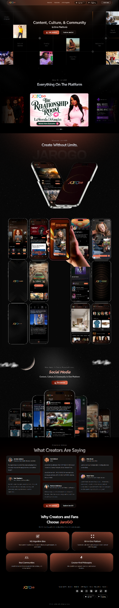
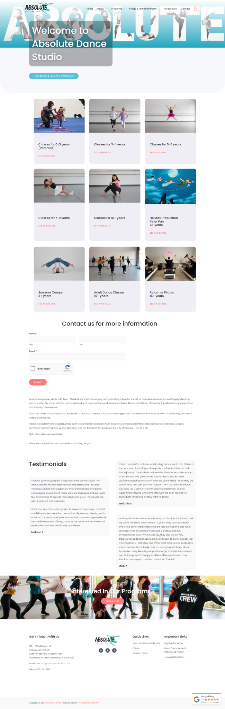

Website Development & Rebuilds
Building new WordPress websites and rebuilding existing sites to improve structure, usability, and presentation.
Hi, I'm Jennifer Estama — a web developer based in Bacolod City, Philippines. I create, improve, maintain, and migrate websites, with a focus on practical solutions and user-friendly experiences.
I'm a Bachelor of Science in Information Technology graduate with hands-on experience working on business websites and digital projects. My work includes website builds and rebuilds, redesigns, rebranding, maintenance, migrations, and front-end and back-end adjustments.
I enjoy turning website requirements into clean, functional experiences and helping keep sites secure, updated, and running smoothly.
Support across the website lifecycle — from launch to ongoing improvements.
Building new WordPress websites and rebuilding existing sites to improve structure, usability, and presentation.
Refreshing layouts, visual identity, website content presentation, and brand assets to create a consistent experience.
Plugin and theme updates, troubleshooting, performance improvements, security checks, and ongoing site care.
Moving websites between hosting environments and assisting with domain, DNS, and deployment tasks.
On-page SEO improvements, WooCommerce setup and support, and practical content and site structure enhancements.
Creating logos, vector graphics, and supporting visual assets for websites and digital projects.
A selection of websites I've worked on. Select a project link to visit the live website. Client surnames are abbreviated for privacy.

Media and platform website project showcasing content, culture, community, and digital experiences.
Visit live website ↗
Online magazine website with categorized editorial content and media features.
Visit live website ↗
Organization website presenting programs, events, membership information, and resources.
Visit live website ↗
Real estate investment website with company information, investment approach, and market content.
Visit live website ↗
Service business website presenting residential and commercial locksmith services.
Visit live website ↗
Dance studio website featuring classes, programs, testimonials, and contact information.
Visit live website ↗
Home improvement website featuring renovation services, project imagery, and customer reviews.
Visit live website ↗
Biological consulting website presenting services, representative projects, and company expertise.
Visit live website ↗Have a website project or need help improving an existing site? Get in touch.
WordPress Developer · Web Designer · SEO Specialist
📍 Bacolod City, Philippines
For project inquiries, collaborations, or professional opportunities, send me an email.
Email Jennifer